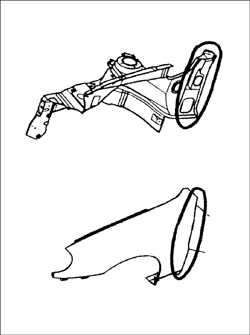
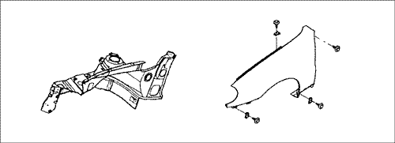
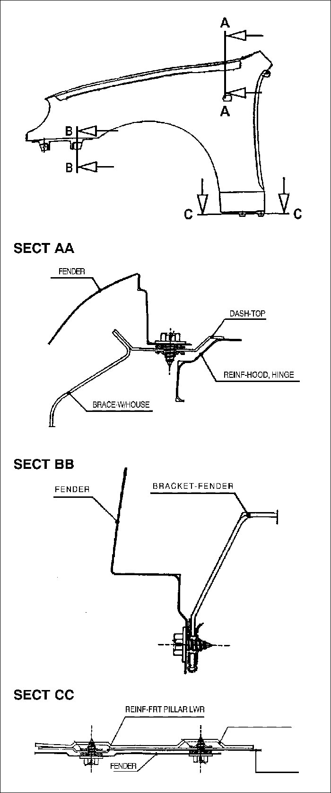
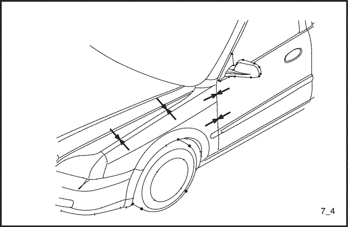
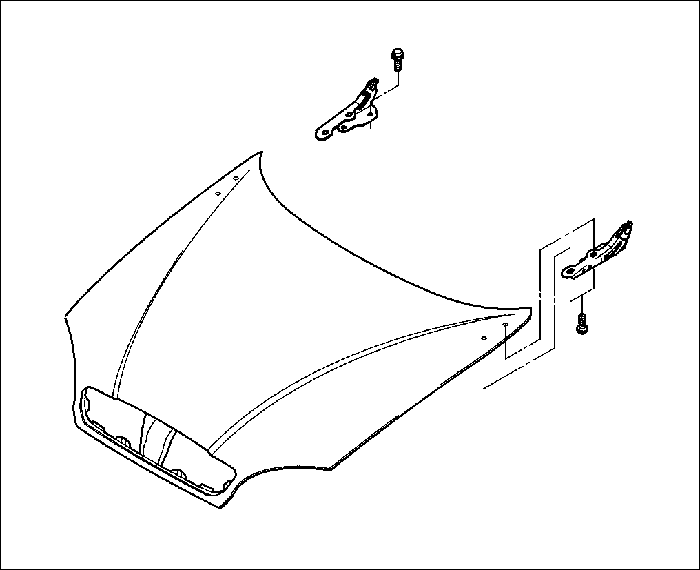
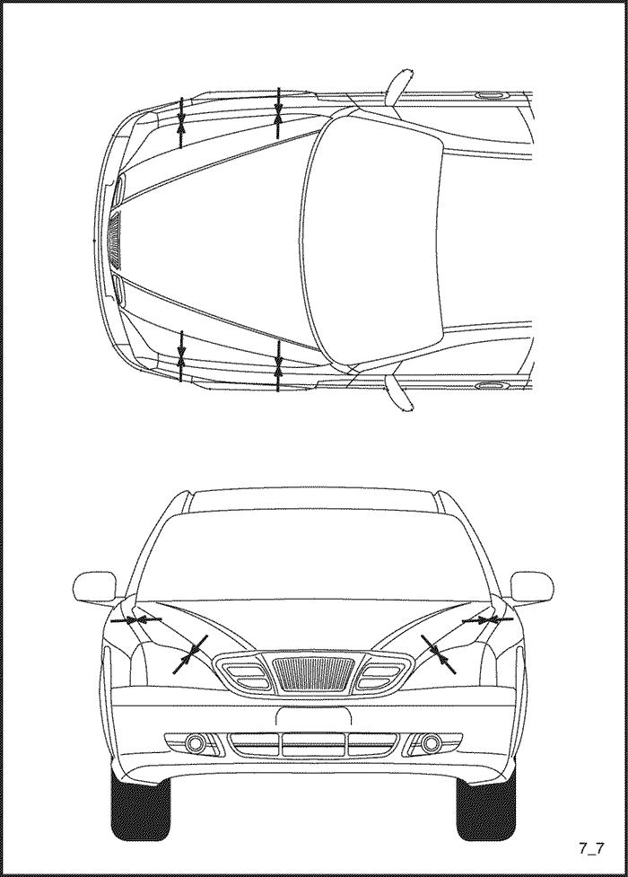
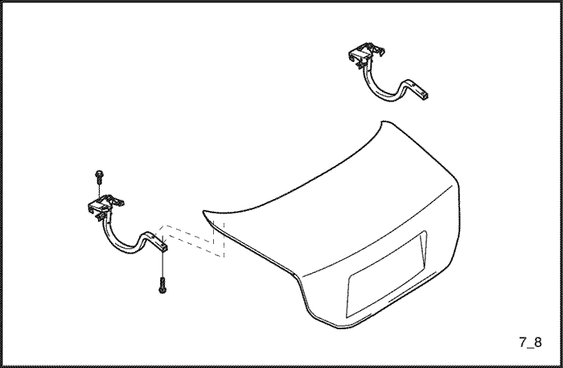
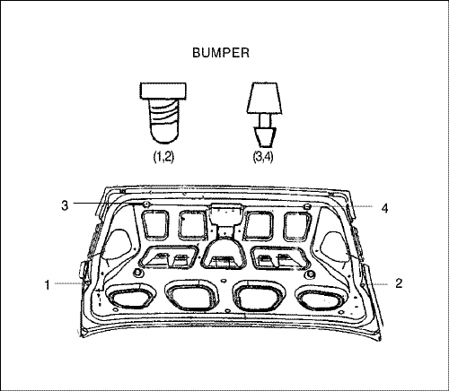
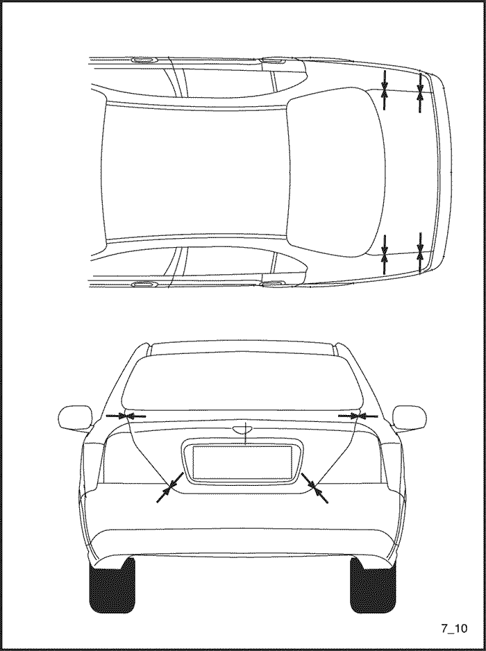

КРЫЛО, КАПОТ И КРЫШКА БАГАЖНИКА
КРЫЛО
ПРОЦЕДУРА РЕМОНТА
- Снимите соответствующие части.
- Решетка радиатора и передний бампер.
- Грязезащитный щиток и подкрылок.
-
- Снимите крыло
-
- Подготовьте новое крыло.
- Подготовьте новое крыло и проверьте поврежденные места.
-
- Нанесите краску.
-
- ПРЕДОСТОРОЖНОСТЬ
- При нанесении лакокрасочных покрытий обеспечьте вентиляцию. Большинство лакокрасочных материалов содержат вредные при вдыхании или проглатывании вещества. Прежде чем открывать емкость с лакокрасочным материалом, прочтите этикетку.
- Избегайте контакта с кожей. При окраске используйте респиратор установленного образца, перчатки, средства защиты глаз и соответствующую одежду.
- Лакокрасочные материалы огнеопасны. Храните их в безопасном месте, берегите от искр и огня, не курите.
- Нанесите антикоррозионные средства.
- Нанести антикоррозионное средство на зоны дверных петель.




- Нанесите герметик.
- Нанесите герметик на крепежные болты.
Примечание: Прежде чем накладывать новый герметик, проверить состояние старого.

- Предварительно установите крыло.
- Прикрепите к колесной арке болтами в двух местах. Закройте багажник и проверьте спереди и сзади зазоры и разницу уровней багажника и двери.

- Полностью затяните крепеж.
- После проверки и регулировки положения установки полностью затяните все болты.
- Установите соответствующие детали.
- Установка производится в порядке, обратном снятию.
- Проверьте зазоры
- Проверьте зазоры переднего бампера.
КАПОТ
ПРОЦЕДУРА РЕМОНТА
- Снимите соответствующие части.
- Шланг и сопла омывателя.
- Жгут проводки и т.д.
- Снимите капот.
- Удалите болты крепления капота к двум петлям капота.

- Подготовьте новый капот.
- Подготовьте новый капот и проверьте поврежденные места.
-
- Нанесите краску.
-
- ПРЕДОСТОРОЖНОСТЬ
- При нанесении лакокрасочных покрытий обеспечьте вентиляцию. Большинство лакокрасочных материалов содержат вредные при вдыхании или проглатывании вещества. Прежде чем открывать емкость с лакокрасочным материалом, прочтите этикетку.
- Избегайте контакта с кожей. При окраске используйте респиратор установленного образца, перчатки, средства защиты глаз и соответствующую одежду.
- Лакокрасочные материалы огнеопасны. Храните их в безопасном месте, берегите от искр и огня, не курите.
-
- Предварительно установите капот.
- Аккуратно прикрепите петли капота в двух местах четырьмя болтами.
- Закрыть капот и проверить спереди и сзади зазоры и разницу уровней капота, крыла и фар.

- Полностью затяните крепеж.
- После проверки и регулировки положения установки полностью затяните все болты.
-
- Установите соответствующие детали.
- Шланг и сопла омывателя.
- Установка производится в порядке, обратном снятию.
-
- Проверка и регулировка.
- Проверить зазоры и различия уровней
- Проверьте открывание и закрывание замка капота.
- Проверить разбрызгивание жидкости омывателя и отрегулировать разбрызгиватели омывателя на панели капота.
КРЫШКА БАГАЖНИКА
ПРОЦЕДУРА РЕМОНТА
- Снимите соответствующие части.
- Жгут проводов и электромагнитный клапан.
- Узел замка, защелки и др.
- Снимите крышку багажника.
- Удалите болты крепления крышки багажника к двум петлям.

- Подготовьте новую крышку багажника.
- Подготовьте новую крышку багажника и проверьте поврежденные места.
- Нанесите краску.
-
- ПРЕДОСТОРОЖНОСТЬ
- При нанесении лакокрасочных покрытий обеспечьте вентиляцию. Большинство лакокрасочных материалов содержат вредные при вдыхании или проглатывании вещества. Прежде чем открывать емкость с лакокрасочным материалом, прочтите этикетку.
- Избегайте контакта с кожей. При окраске используйте респиратор установленного образца, перчатки, средства защиты глаз и соответствующую одежду.
- Лакокрасочные материалы огнеопасны. Храните их в безопасном месте, берегите от искр и огня, не курите.
- Предварительно установите крышку багажника.
- Прикрепите петли крышки багажника в двух местах четырьмя болтами.
- Установите бампер.

- Закройте крышку багажника и проверьте зазоры и разницу уровней крышки багажника, наружных панелей боковин и задних комбинированных фонарей.

- Полностью затяните крепеж.
- После проверки и регулировки положения установки полностью затяните все болты.
- Установите соответствующие детали.
- Жгут проводов и электромагнитный клапан.
- Узел замка, защелки и тяги.
- Установка производится в порядке, обратном снятию.
-
- Проверка и регулировка.
- Очистите багажник.
- Проверьте зазоры и различия уровней.
- Проверить открывание и закрывание замка крышки багажника.
- Осмотрите багажник на предмет протечек.